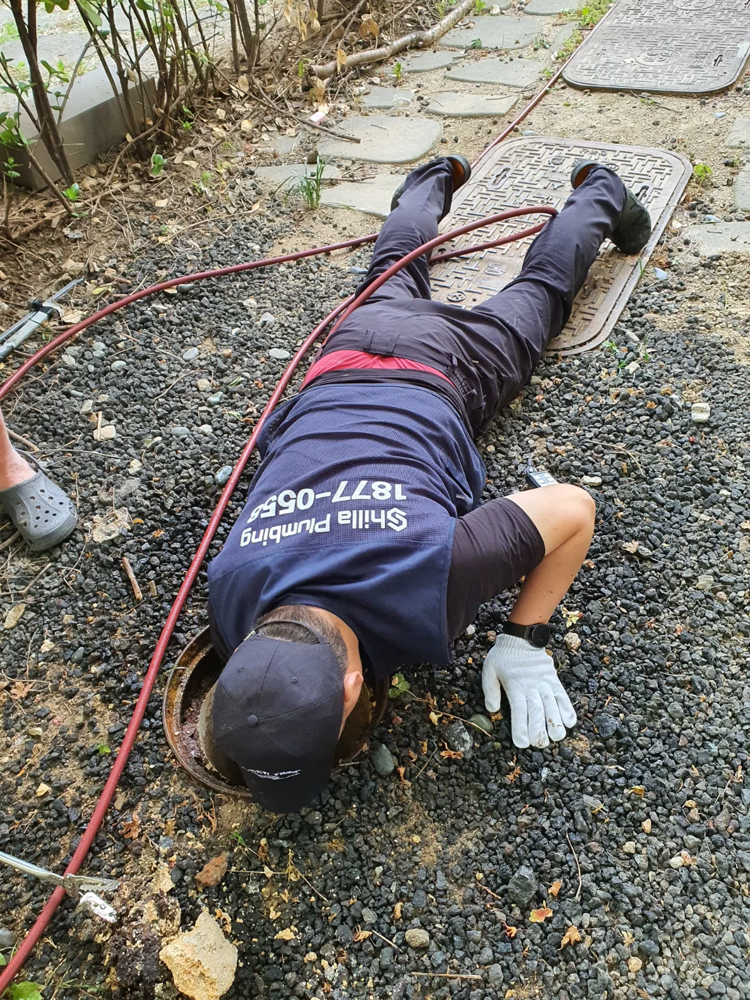
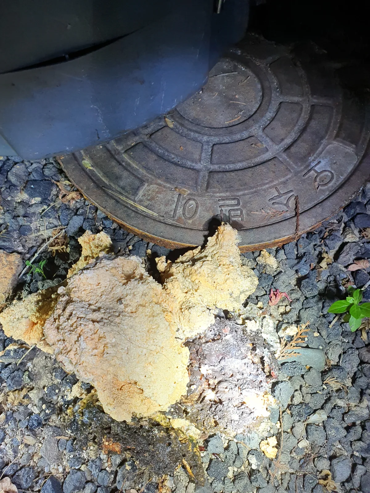

성남시 분당구 판교동 하수구막힘, 현장 도착 후 진단
경기 성남시 분당구 판교동에서 늦은 밤 하수구막힘으로 연락을 받아 긴급 출동했습니다.
현장을 확인한 결과 단순히 배수구 입구만 뚫는 작업으로는 해결하기 어려운 공용 오수배관 막힘이었습니다.
다행히 외부에 오수받이가 설치되어 있어 연결 배관에 접근할 수 있었습니다. 특히 약 3개월 전 작업했던 다른 현장과 오수받이 구조가 상당히 유사해 기존 경험을 바탕으로 배관의 연결 방향과 장비 진입 경로를 파악할 수 있었습니다.
배관 내시경을 활용해 내부 상태를 점검하고, 축적된 굳은 기름때를 제거하기 위한 작업을 준비했습니다.
1단계: 증상 확인과 필요한 장비 작업
심야 시간에는 먼저 오수받이를 개방하고 리지드 플렉스샤프트 장비를 이용해 1차 막힘 제거 작업을 진행했습니다.
샤프트는 회전력을 이용해 배관 내벽에 부착된 굳은 기름때와 이물질을 물리적으로 제거하는 장비입니다.
이번 현장에서는 노란빛을 띠는 단단하게 굳은 기름덩어리가 다량 확인될 정도로 내부 오염이 심했습니다.
단순히 막힌 부분을 관통하는 데 그치지 않고, 배관에 축적된 기름성 이물질을 최대한 제거하는 데 집중했습니다.
이후 잔여 찌꺼기를 배출하기 위한 고압세척 작업이 필요했지만, 작업을 이어가려던 시점에는 이미 새벽 2시가 넘은 상태였습니다.
고압세척 장비의 소음이 주변 주민들에게 불편을 줄 수 있다고 판단해 심야 작업은 여기서 마무리하고, 고압세척은 다음 날 진행하기로 했습니다.

2단계: 원인 구간 처리와 정상 작동 확인
다음 날 다시 현장을 방문해 전날 진행하지 못했던 고압세척 작업을 이어갔습니다.
1차 샤프트 작업으로 굳은 기름때를 제거했더라도 떨어져 나온 찌꺼기와 잔여 오염물이 배관 내부에 남아 있을 수 있습니다.
따라서 고압세척 장비를 이용해 배관 내벽과 연결 구간에 남아 있는 기름성 이물질을 씻어내고 배출하는 작업을 진행했습니다.
샤프트가 단단하게 굳은 기름때를 물리적으로 제거하는 역할이라면, 고압세척은 떨어져 나온 찌꺼기와 남은 오염물을 배출해 배수 흐름을 회복하는 역할입니다.
이처럼 두 작업의 목적을 구분하고, 현장 여건에 맞춰 작업 시점을 조정해 공용 오수배관의 세척을 마무리했습니다.

작업 결과와 재발 방지 안내
심야에 진행한 리지드 샤프트 작업과 다음 날 고압세척을 통해 공용 오수배관 내부의 굳은 기름때와 잔여 이물질을 제거했습니다.
모든 작업을 마친 뒤 최종 통수 상태를 점검했으며, 막힘이 해소되고 물이 원활하게 배수되는 것을 확인했습니다.
이번 성남시 분당구 판교동 현장은 단순한 관통 작업이 아닌, 굳은 기름때 제거와 배관 고압세척이 함께 필요했던 사례입니다.
특히 새벽 2시 이후에는 고압세척 장비의 소음을 고려해 작업을 무리하게 이어가지 않고, 다음 날 후속 작업을 진행했습니다.
반복적인 오수관막힘이나 역류를 예방하려면 기름성 오염물이 배관으로 유입되지 않도록 관리하는 것이 중요합니다. 공용배관에서 문제가 발생한다면 개별 배수구뿐 아니라 외부 오수받이와 연결 배관의 상태까지 점검할 필요가 있습니다.
신라건축설비는 배관의 구조와 막힘 원인뿐 아니라 작업 시간과 주변 환경까지 고려해 적절한 공법과 작업 범위를 판단하고 있습니다.
최종 조치: 심야 리지드 샤프트를 이용한 1차 굳은 기름때 제거, 다음 날 고압세척을 통한 잔여 이물질 배출 및 최종 정상 통수 확인
현장 방문 전 확인하는 비용과 작업 범위
신라건축설비는 현장 증상과 배관 구조를 확인한 뒤 필요한 작업과 예상 비용을 안내합니다. 단순 관통으로 해결되는지, 배관내시경·석션·고압세척 또는 추가 장비가 필요한지는 현장 상태에 따라 달라집니다. 출장비와 야간 작업비, 추가 장비 비용이 발생할 수 있는 경우 작업 전에 먼저 설명하고 동의를 받은 범위에서 진행합니다.
업체를 선택할 때 확인할 사항
무조건적인 ‘0원’ 표현보다 실제 작업 범위, 추가 비용 조건, 사용 장비와 사후 대응 기준을 확인하는 것이 중요합니다. 해결되지 않았을 때의 비용 기준과 작업 후 동일 증상 발생 시 점검 범위를 사전에 문의해두면 불필요한 분쟁을 줄일 수 있습니다.
성남시 분당구 하수구막힘 자주 묻는 질문
하수구막힘은 왜 반복되나요?
성남시 분당구 판교동 현장처럼 늦은 밤 공용 오수배관 막힘 발생, 배관 내부에 축적된 굳은 기름때로 배수불량 발생 증상은 원인이 현장마다 다를 수 있습니다. 배관 내부 기름 슬러지·생활 오염물·스케일이 충분히 제거되지 않았거나 오수관·공용배관 구간에 문제가 있으면 반복될 수 있습니다. 재발 시 막힌 위치와 배관 상태를 함께 확인합니다.
하수구가 역류하거나 물이 안 내려가면 하수구뚫는업체를 불러야 하나요?
바닥 배수구가 역류하거나 여러 배수구에서 동시에 물이 빠지지 않으면 단순 배수구 막힘보다 깊은 배관이나 공용배관 문제일 수 있습니다. 전문 장비로 원인 구간을 확인하는 것이 좋습니다.
여러 배수구가 동시에 막히면 공용배관이나 오수관 문제인가요?
동시에 여러 곳에서 배수 불량과 역류가 발생하면 메인배관·오수관·공용배관을 의심할 수 있지만 건물 구조마다 다릅니다. 배관내시경과 현장 진단으로 구간을 구분합니다.
하수구뚫는업체는 어떤 장비로 작업하나요?
현장에 따라 샤프트, 석션, 배관내시경, 고압세척 장비 등을 사용합니다. 단순 관통이 필요한지 배관 내부 세척까지 필요한지는 오염 상태와 막힘 원인에 따라 판단합니다.
하수구 고압세척은 언제 필요한가요?
기름 슬러지나 배관 내부 오염이 넓게 쌓여 반복 막힘이 생기는 경우 고압세척이 효과적일 수 있습니다. 모든 하수구막힘에 고압세척을 적용하는 것은 아니며 먼저 배관 상태를 확인합니다.
하수구막힘 비용은 어떻게 정해지나요?
막힌 위치, 배관 길이와 구경, 공용배관 여부, 내시경·샤프트·고압세척 등 장비 투입 범위에 따라 달라집니다. 추가 작업이 필요한 경우 진행 전에 범위와 비용을 안내합니다.
하수구막힘 서울·경기 출동지역
신라건축설비는 성남시 분당구 판교동 현장을 포함해 서울 25개 구와 경기도 31개 시·군의 배관 문제를 상담합니다. 현장 거리와 기사 배정 상황에 따라 출동 가능 여부를 먼저 안내드립니다.
서울 전 지역
강남구 · 강동구 · 강북구 · 강서구 · 관악구 · 광진구 · 구로구 · 금천구 · 노원구 · 도봉구 · 동대문구 · 동작구 · 마포구 · 서대문구 · 서초구 · 성동구 · 성북구 · 송파구 · 양천구 · 영등포구 · 용산구 · 은평구 · 종로구 · 중구 · 중랑구
경기도 주요 출동지역
수원시 · 용인시 · 고양시 · 화성시 · 성남시 · 부천시 · 남양주시 · 안산시 · 평택시 · 안양시 · 시흥시 · 파주시 · 김포시 · 의정부시 · 광주시 · 하남시 · 광명시 · 군포시 · 양주시 · 오산시 · 이천시 · 안성시 · 구리시 · 의왕시 · 포천시 · 양평군 · 여주시 · 동두천시 · 과천시 · 가평군 · 연천군